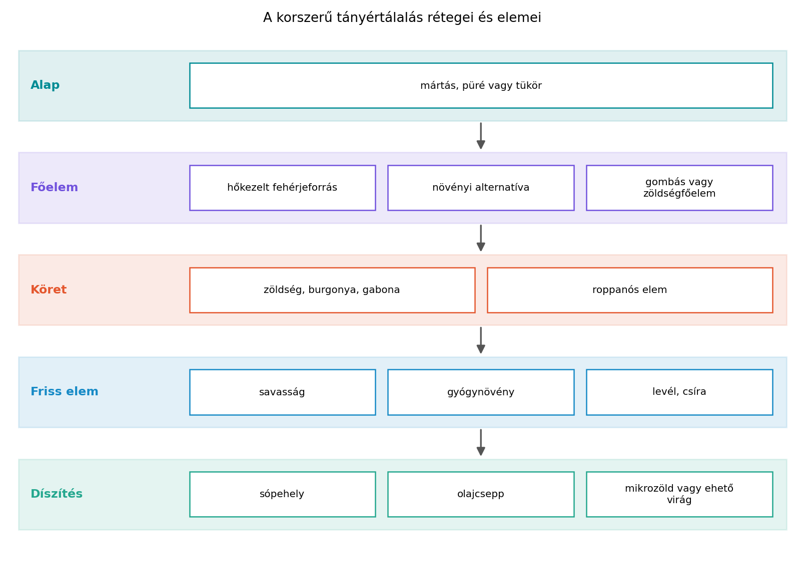

A vendéglátó konyhában ma már nem elég a hagyományos technológiákat ismerni: a vendég kérdezi, mitől más egy fermentált zöldség, egy növényi alapú főétel vagy egy modern tányéron tálalt étel. A szakácsnak tudnia kell, hogy az új irányzatok közül melyik valódi érték, és melyik lehet csupán marketingfogás, rosszul alkalmazott technika vagy élelmiszerbiztonsági kockázat. Ebben az alfejezetben a leggyakrabban hallott kifejezéseket – hidegen sütés, fermentálás, zero waste, molekuláris konyha, modern tálalási trend – járjuk körül a gyakorlati konyhai alkalmazás szempontjából.
Motiváló helyzet. Egy étterem étlapján az szerepel: „hidegen füstölt lazac”, „alacsony hőmérsékleten sütött csirkemell”, „lassan sütött sertéstarja”. A vendég megkérdezi, miért „hideg” a sütés. A pultos kolléga nem tudja pontosan elmagyarázni. A kérdés nem szőrszálhasogatás, hanem élelmiszerbiztonsági kérdés is: ha egy technológiát pontatlanul nevezünk meg, rosszul is hajthatjuk végre.
Definíció. A „hidegen sütés” a magyar konyhai köznyelvben pontatlan gyűjtőfogalom. Önálló, szabványos hőkezelési mód ilyen néven nincs a klasszikus konyhatechnológiában. A gyakorlatban két, egymástól lényegesen eltérő eljárást szoktak „hidegen sütésként” emlegetni:
Szabály. A szakmai kommunikációban soha ne ígérj „hidegen sütött” ételt anélkül, hogy megmondanád, melyik eljárásról van szó. A vendég számára az „alacsony hőmérsékleten sütött” kifejezés azért is pontosabb, mert jelzi, hogy az étel megfelelő hőkezelést kapott, míg a hideg füstölésnél kifejezetten közölni kell, ha a termék nyers állapotú maradt. Ez fogyasztóvédelmi, élelmiszer-biztonsági és allergén-tájékoztatási szempontból sem mindegy.
Higiénia. A hideg füstölés nem csökkenti megbízhatóan a kórokozó baktériumok számát, mert a hőmérséklet alacsony. Különösen kockázatos a Listeria monocytogenes és a Clostridium botulinum szaporodása, főleg vákuumcsomagolt, hidegen füstölt hal- és húskészítményeknél (ellenőrizendő: NÉBIH-útmutató, 853/2004/EK miatti követelmények). A sérülékeny csoportok – várandósok, kisgyermekek, idősek, legyengült immunrendszerűek – számára a nyers, hidegen füstölt termék fogyasztása gyakran kerülendő; erről a vendéget pontosan tájékoztatni kell. Ipari beszállítótól vásárolt, ellenőrzött terméknél a gyártói utasítás a mérvadó; házi hideg füstölés csak tankonyhai vagy üzemi, HACCP-vel szabályozott környezetben ajánlott.
Technológia röviden – hideg füstölés. A füstképző berendezésből a füstöt hűtőcsövön át vezetik a kezelőtérbe, ahol a hőmérséklet 30 °C alatt marad. A hús vagy hal előzetesen sózott, pácolt, esetleg szárított. A kezelés időtartama több órától néhány napig tarthat (ellenőrizendő: recept és HACCP-terv). Fontos a füst mennyiségének, a légáramlásnak és a felületi víztartalomnak az ellenőrzése: a nedves felület rontja a füst megtapadását, és kedvez a mikrobák szaporodásának.
Definíció. A fermentálás olyan tartósító és ízesítő eljárás, amelyben mikroorganizmusok – leggyakrabban tejsavbaktériumok, élesztők vagy penészgombák – bontják le az élelmiszer szénhidrátjait. A keletkező tejsav, ecetsav vagy alkohol csökkenti a pH-t, és gátolja a romlást okozó mikrobák szaporodását.
Példa. A savanyú káposzta, a kovászos uborka, a kimchi, a fermentált zöldségchutney, a miso, a tempeh és a kombucha mind fermentált élelmiszer. A konyhában leggyakrabban tejsavas erjesztést alkalmazunk zöldségekhez.
Technológia lépései zöldségek tejsavas fermentálásához:
Kritikus pont. A fermentálás során a legfontosabb biztonsági tényező a pH csökkenése. A tejsavas erjedésnek legfeljebb 4,6-os pH-t kell elérnie (jó gyakorlatban ennél alacsonyabbat, pl. 4,2 körüli értéket) ahhoz, hogy a Clostridium botulinum ne tudjon méreganyagot termelni (ellenőrizendő: Codex / HACCP-terv). Üzemi környezetben a pH-t mérni és dokumentálni kell. Ha a fermentlében penészszőnyeg jelenik meg, hibás a folyamat; a penészt eltávolítani nem megoldás, mert a mikotoxinok a folyadékba is kerülhetnek. Ilyenkor az egész tétel selejtes.
Biztonsági korlát. Otthoni gyakorláskor fermentálni csak leírás alapján, friss nyersanyagból, tiszta eszközökkel, felügyelettel szabad. Kóstolás előtt mindig ellenőrizd az illatot, a színt és a pH-t; ha kétséges, dobd ki.
Fogalom. A növényi alapú konyha olyan ételeket jelent, amelyekben az állati fehérjét részben vagy teljesen növényi alapanyagok helyettesítik: hüvelyesek, gabonák, olajos magvak, gombák, tofu, tempeh, szejtán, növényi italok. A szakács feladata, hogy ezeket az alapanyagokat ne csupán „hús utáni pótlékként”, hanem saját jogon, megfelelő technológiával készített fogásként kezelje.
Allergén. A növényi alternatívák gyakran érintik a jelölésköteles allergéneket: a szója (tofu, szójaszósz, szójatej), a glutén (szejtán, növényi húspótlók), a diófélék (mandulatej, kesudió-krém), a szezámmag (tahini), a csillagfürt és a mustár. A keresztallergia kockázata is nagy: például a földimogyoróra allergiás vendég érzékeny lehet a csillagfürtre vagy a szójára. A konyhán ezért a növényi étel készítésekor is pontosan kell tájékoztatni a vendéget, és kerülni kell a közös eszközök, vágódeszkák okozta keresztszennyeződést.
Példa. Egy vegán étel: füstölt paprikás mártással tálalt sült cékla, fermentált vöröskáposzta, szejtán helyett barna lencsepogácsa. Allergéntájékoztató: az étel összetevői között nincs glutént tartalmazó gabona, tej és dióféle (szejtán helyett lencsepogácsa, szójaszósz helyett só és füstölt paprika); a konyhai keresztszennyeződés lehetőségéről a vendéget tájékoztatjuk.
Fogalom. A zero waste (nulla hulladék) szemlélet arra törekszik, hogy a konyhán minél kevesebb élelmiszer-hulladék keletkezzen, és ami mégis, azt lehetőleg újrahasznosítsuk vagy komposztáljuk. Például a zöldség héját, szárakat alaplevet, zöldségkrémet vagy chips-et készíthetünk belőle; a csontokból alaplé, a fel nem használt kenyérből zsemlemorzsa készül.
Higiéniai korlát. A zero waste nem jelenthet alacsonyabb élelmiszerbiztonsági szintet. A lejárt, romlott, penészes, erjedt, fertőzött alapanyagot tilos újrafelhasználni, még akkor is, ha „kidobni kár”. A zöldség előkészítéséből származó hulladékot azonnal, hűtve kell tárolni, és rövid időn belül felhasználni; a nyers és a főtt étel maradékát mindig külön edényben, jelölve. A zero waste hulladékpiramist követ: először a megelőzés, utána az újrahasznosítás, a komposztálás csak az utolsó előtti lépés.
Definíció. A molekuláris gasztronómia olyan konyhai eljárások összessége, amelyek a fizika és a kémia eszközeivel változtatják meg az élelmiszerek állományát, formáját vagy megjelenését. Leggyakoribb alapműveletek: gélesítés, szferifikáció, habosítás, emulgeálás.
Legfontosabb technikák röviden:
Munkabiztonság és adalékanyagok. A molekuláris technikához használt anyagok élelmiszeripari adalékanyagok, amelyek engedélyezettek, de csak a megengedett mennyiségben használhatók. A por alakú anyagok bekeverésekor kerülni kell a por belélegzését; porvédő maszk vagy elszívó használata indokolt. A keverékeket gondosan címkézni kell, mert összetéveszthetők a fűszerekkel. A vendéget tájékoztatni kell az adalékanyag-tartalomról, különösen ha valamelyik allergén (például szója).
Kritikus pont. A molekuláris technikák nem pótolják a hőkezelést. Ha a gélt vagy a szferifikált gömböt nyers gyümölcsléből, halból, tojásból készítjük, a nyersanyag kockázata megmarad. A szferifikált gyümölcslé nem fertőtlenített; magas kockázatú alapanyagból (nyers tojás, tej, hús) ilyen eljárás csak hőkezelés után vagy eleve hőkezelt alapanyagból ajánlott.
Miért fontos? A korszerű konyha a tálalást is technológiának tekinti: a tányéron látható elrendezés befolyásolja a vendég ízérzetét, a fogás értékét és a konyha hatékonyságát. A vizsgamunkában a tálalásnak és a díszítésnek mindig összhangban kell lennie az ételtechnológiával és az élelmiszerbiztonsággal.
Definíció. A tálalási módok rendszere az étel, a köret, a mártás és a díszítés tányéron vagy tálon való elhelyezésének módja. A leggyakoribb tálalási módok:
A tányér kompozíció általában rétegekre bontható:

Az ábra azt mutatja, hogy a tányér alján gyakran egy alap vagy mártásréteg helyezkedik el, erre kerül a főelem, mellé a köret és a friss elem, végül a díszítés (ugyanaz az ötrétegű modell, mint a Tálalási módok és díszítés alfejezetben). Az elrendezés sorrendje nem merev szabály: a cél mindig az, hogy a vendég minden falatban érezze a fogás összhangját. A tálalási módok ezen rendszerezését a vizsgafelkészülés is használja.
A modern tányértálaláson belül az elemek elrendezése is többféle lehet. A lenti ábra négy gyakori típust mutat ugyanazokkal az elemekkel: (1) a klasszikus, óraszámlap szerinti elrendezésben a fő elem elöl, „6 óránál” áll, a köret és a friss elem mögötte; (2) a rétegzett, toronyszerű tálalásnál az elemek egymásra épülnek; (3) a lineáris tálalásnál egy sávban sorakoznak; (4) a szabad formájú tálalás természetesnek látszik, de ez is tervezett.
Bármelyik típust választod, a perem maradjon üres és tiszta, a rétegzett elrendezés pedig legyen stabil, hogy a felszolgálás közben ne dőljön el. A HTML-kiadásban egy tányérra vagy jelmagyarázat-elemre mutatva megjelenik a rövid magyarázat.
Továbbvitt eredmény. A tálalási módok itt bemutatott rendszere (klasszikus, modern, büfé, street food, valamint a tányérrétegek) az A szakmai vizsga felépítése és az elméleti felkészülés és a Gyakorlati vizsga: menükészítés munkatervvel és értékelés alfejezetekben kerül elő vizsgakövetelményként és értékelési szempontként. Ott a szempontok között szerepel a tálalás arányossága, hőmérséklete, esztétikája és a fogás összhangja.
Tálalási trendek a gyakorlatban. A mai irányzatok közé tartozik a kevesebb, de karakteresebb díszítés, az ehető díszítés (mikrozöldek, ehető virágok, olajcsepp, krémek), a természetes anyagok (kő, fa, kerámia tálalóeszközök), és a növényi elemek előtérbe helyezése. Ugyanakkor a trend soha nem írhatja felül az élelmiszerbiztonságot: a díszítőelemeknek is élelmiszer-minőségűnek, hőkezeltnek vagy megfelelően mosottnak kell lenniük, és nem lehetnek allergénforrások a vendég tájékoztatása nélkül. A tálalóeszközöket (kő, fa) is fertőtleníthetőnek kell választani.
Számítás 1. Só mennyisége fermentáláshoz. Mennyi sót kell 2,5 kg friss, gyalult káposztához, ha 2,0% sótartalmat szeretnénk? A szükséges só tömegét a káposzta bruttó tömegére számoljuk:
Ellenőrzés: .
Számítás 2. Tányéradag arányai. Egy modern tányértálalásnál a kész étel adagsúlya 350 g. A séf a következő arányokat adja meg: hőkezelt fehérjeforrás 40%, köret 35%, zöldséges kiegészítő 15%, mártás 10%. Számítsd ki a komponensek tömegét!
Ellenőrzés: , ami a kerekítés miatt megfelel. A tányér elrendezésekor ezeket a tömegeket mérni kell, mert az adagsúly és a tápérték ettől függ.
Cél: egy korszerű, biztonságos tányérdesszert vagy főétel tálalása adott komponensekből.
Eszközök és anyagok: hőmérséklet-ellenőrzésre maghőmérő; tiszta tányérok; kanál, csipesz, ecset; kész komponensek (mártás, főelem, köret, zöldség, díszítés); kesztyű.
Biztonsági korlát. Ezt a gyakorlatot tankonyhán vagy oktatói felügyelettel végezd; otthon csak a leírt higiéniai feltételekkel. Forró mártással és éles eszközökkel dolgozol: ügyelj a gőzre, a tányér szélét ne töltsd túl.
Higiéniai előkészület: kézmosás, tiszta kötény, hajsapka, a tálalófelület fertőtlenítése, a komponensek hőmérsékletének ellenőrzése (meleg komponensnél a technológiai lap szerinti maghőmérséklet: a hőkezelés CCP-je teljesült, melegen tartásnál legalább 63 °C; hideg ételnél 5 °C alatt; (ellenőrizendő: NÉBIH-útmutató / HACCP-terv)). Allergiás vendég ételénél (a kért allergén nélkül készülő ételnél) külön eszközök, külön terület – „allergénmentes” garanciát nem adunk.
Számozott lépések:
Ellenőrzési pontok: mit kell látni és mérni? A tányér tiszta; az arányok megfelelnek a tervezettnek; a meleg elem meleg, a hideg elem hideg; a díszítés ehető és nem allergén; a kompozíció egyensúlyban van.
Érzékszervi követelmények. Szín: a komponensek kontrasztja vonzó, a mártás élénk, nem fakó; a zöld friss, nem fonnyadt. Állag: a főelem megfelelő hőmérsékletű, szaftos, nem száraz; a köret roppanós, a mártás sima. Íz: a sav, sós, édes, keserű és umami arányos; az ízesítés nem tolakodó. Illat: az étel jellegzetes aromája, nincs savanyú, penészes vagy égett szag. Forma: a tányér kompozíció szándékolt, nem összeesett.
Mérhető ellenőrzések. A meleg komponens maghőmérséklete a technológiai lap szerinti (a hőkezelés CCP-je teljesült), melegen tartásnál legalább 63 °C (ellenőrizendő: NÉBIH-útmutató / HACCP-terv); a hideg étel 5 °C alatt; az adagsúly a receptúra szerinti, tűréshatáron belül (ellenőrizendő: üzemi szabvány). A fermentált termék pH-ja 4,6 alatt legyen (ellenőrizendő).
Hiba 1: A szakács „hidegen füstölt lazacot” kínál, de a felület enyhén meleg, mert a füstölőkamra hőmérséklete 40 °C fölé ment. Ok: nem ellenőrizte a kamra hőmérsékletét. Helyes gyakorlat: folyamatos hőmérsékletmérés; ha a kamra hőmérséklete a HACCP-terv szerinti határt túllépte, a tételt el kell különíteni és zárolni; a felhasználásáról a HACCP-terv dönt (jellemzően selejtezés), az eltérést dokumentálni kell.
Hiba 2: A fermentált zöldség tetején penészréteg jelent meg, a szakács lekanalazta és tálalta. Ok: az erjesztés közben a zöldség felúszott, oxigénhez jutott. Helyes gyakorlat: a zöldséget súllyal, felülettartóval teljesen a lé alatt kell tartani; penész esetén az egész edényt selejtezni kell, mert a penészméreg beoldódhatott.
A helyes erjesztőedényben (lásd az ábrát) a tiszta üveg- vagy kerámiaedényben (1) a sózott zöldség tömören áll (2), a sós lé (3) teljesen ellepi, a nehezék (4) – üveglap vagy felforralt vízzel töltött zacskó – a lé alatt tartja. A laza fedőn vagy zárószelepen (5) az erjedési gáz távozik, a címkén (6) a dátum, a sótartalom és a mért pH szerepel. A hibás edényben nehezék nincs: a zöldség felúszik (a), és a felszínen penészréteg (b) jelenik meg.
Ellenőrzési pont: naponta nézd meg, hogy a zöldség a lé alatt van-e, és a pH-t a HACCP-terv szerint mérd és írd fel (legfeljebb 4,6, ellenőrizendő: Codex / HACCP-terv). A HTML-kiadásban a helyes és a hibás edény között válthatsz.
Hiba 3: A modern tányértálalásnál a mártás a tányér szélére folyt, a díszítővirág nem volt ehető. Ok: túl sok mártás, nem törölték le a szélét, és nem ellenőrizték a díszítés élelmiszer-minőségét. Helyes gyakorlat: pontosan mért mártásmennyiség, a tányér szélének tisztán tartása, csak ehető, allergénjelölt díszítés használata.
Egy családi rendezvényre készülő étterem új menüsort állított össze: „hidegen füstölt pisztráng, fermentált uborkasaláta, karfiolkrém, tányérdesszert ehető virággal”. A konyhafőnök a tálalás előtt ellenőrizte a komponensek hőmérsékletét, és kiderült, hogy a hideg füstölésből származó pisztráng felülete 8 °C, a maghőmérséklete 6 °C volt, vagyis a megengedett 5 °C fölött (ellenőrizendő: HACCP-terv). A pisztrángot aznap reggel szállították, ellenőrzött beszállítótól. A konyhafőnök a tételt zárolta, nem használta fel, és visszaküldte a beszállítónak; az átvételi hőmérsékletet és az eltérést dokumentálta, a fogást pedig más, előírásos hőmérsékleten átvett tételből készítette. A desszertnél a mikrozöldet megmosta, az ehető virágot külön, tiszta csipesszel helyezte el, hogy elkerülje a keresztszennyeződést. Az ételsor azért volt biztonságos, mert a konyha a trendeket a biztonsági szabályokkal összhangban alkalmazta. A tanulság: a „modern” akkor hiteles, ha a kockázatokat is következetesen kezeljük; a hidegen füstölt, nyersen fogyasztott terméknél a hőmérséklet-túllépés utólagos hűtéssel nem javítható.
1. Igaz vagy hamis? A „hidegen sütés” a klasszikus konyhatechnológiában önálló, hőkezeléssel járó eljárás. Válaszod indokold.
2. Nevezz meg két különböző eljárást, amelyet a köznyelv „hidegen sütésként” emleget, és írd le, melyik az, amelyik nyers marad.
3. Miért kell a fermentált zöldségeket a saját levük alatt tartani?
4. Egy adag tányértálalásnál az össztömeg 400 g. A mártás 8%, a díszítés 2%, a főelem 50%, a köret 25%, a zöldség 15%. Mennyi a mártás és a főelem tömege?
5. Milyen allergéneket érinthet egy növényi alapú, szójaszószos, kesudiókrémmel készült tál? Sorold fel a 14 fő allergén közül a lehetségeseket.
A válaszok a Megoldások elején találhatók.
1. feladat (A). Magyarázd el saját szavaiddal, miért veszélyes a „hidegen sütött” kifejezés használata étlapon, ha nem pontosítjuk a technológiát.
2. feladat (A). Sorold fel a tejsavas fermentálás 5 szakszerű lépését zöldségnél, és jelöld, hol van a legfontosabb kritikus pont.
3. feladat (B). Egy zero waste konyhai program során 6 kg zöldség előkészítéséből 1,2 kg hulladék keletkezik. Számítsd ki a felhasználási szintet (nettó/bruttó százalék), és a hulladékszázalékot! Az eredményt egy tizedes jegyre kerekítsd.
4. feladat (B). Válassz ki egy növényi alapú főétel ötletet (pl. sült cékla, lencse-pogácsa, fermentált káposzta, mártás), és jelöld, melyik 14 fő allergén lehet jelen, ha a recept szójaszószt, szezámmagpasztát és kesudiót használ. Javasolj cserét, amely a vendég által kerülendő allergént nem tartalmazza.
5. feladat (C). Tervezz meg egy 400 g-os korszerű tányértálalást egy vegán ételhez. Add meg az arányokat: főelem 45%, köret 30%, zöldség 15%, mártás 8%, díszítés 2%. Számítsd ki a komponensek tömegét grammban, és írd le a tányér rétegeit a tanult modell szerint.
6. feladat (D). A konyhán egy fermentált adagban a pH 4,9 lett. A szakács szerint ez még jó, mert „savanyú”. Milyen kockázatot jelent ez, és mi a helyes intézkedés? Indokold a HACCP szempontjából.
Önellenőrzés – válaszok
1. feladat. A „hidegen sütés” nem egyértelmű: a vendég nem tudhatja, hogy az étel nyers (hideg füstölt) vagy hőkezelt (alacsony hőmérsékleten sütött). Ez félretájékoztatás, és élelmiszerbiztonsági kockázat, mert a sérülékeny csoportok számára a nyers termék tilos lehet. Pontos megnevezéssel kell kommunikálni.
2. feladat. Lépések: 1) friss, sérülésmentes zöldség mosása; 2) sózás (2–2,5%); 3) lenyomkodás, lefedés; 4) erjesztés 18–24 °C-on; 5) hűtés, lassítás. A kritikus pont a pH-mérés: a tejsavas erjedés során legfeljebb 4,6-os pH-t kell elérni (jó gyakorlatban alacsonyabbat), hogy gátolja a Clostridium botulinum toxintermelését (ellenőrizendő).
3. feladat. Adott: bruttó , hulladék . Nettó = . Felhasználási szint: . Hulladékszázalék: . Ellenőrzés: .
4. feladat. Lehetséges allergének: szójabab (szójaszósz), szezámmag (tahini/paszta), diófélék (kesudió). Ha a szójaszósz búzát tartalmaz, glutén is lehet. Cserék: szójaszósz helyett kókusz-aminosav (szója- és gluténmentes), szezámmagpaszta helyett napraforgómagkrém, kesudió helyett sütőtökmagkrém. Minden cserénél ellenőrizni kell a csere összetevőit és a keresztszennyeződés kockázatát (címke: „nyomokban tartalmazhat”), és erről a vendéget tájékoztatni kell.
5. feladat. Számítások: főelem ; köret ; zöldség ; mártás ; díszítés . Rétegek: alul mártástükör (32 g), rá főelem (180 g), mellé köret (120 g) és zöldség (60 g), befejezésként díszítés (8 g). A tányér szélét tisztán kell tartani; a díszítés ehető legyen.
6. feladat. A pH 4,9 nem éri el a biztonságos savasságot, ezért a Clostridium botulinum elvben szaporodhat, ha más feltételek is adottak. Intézkedés: az adagot nem szabad tálalni; a pH-t újra kell mérni, az edény tartalmát selejtezni, vagy ha a fermentáció még nem fejeződött be, ellenőrzött körülmények között hagyni lehet tovább erjedni, de csak pH 4,6 alatt szabad felhasználni. A döntés a HACCP-terv szerint dokumentálandó.
A „hidegen sütés” pontatlan gyűjtőfogalom: a hideg füstölés (15–30 °C) nyersen hagyó ízesítő-tartósító eljárás, míg az alacsony hőmérsékletű hosszú sütés (pl. sous-vide, 60–100 °C-os sütőtér) valódi hőkezelés. A hideg füstölésnél a Listeria és a botulinum kockázata miatt a sérülékeny vendégeket tájékoztatni kell; ipari terméknél a gyártói utasítás, üzemi gyakorlatnál a HACCP-terv mérvadó (ellenőrizendő). A fermentálás tejsavas erjesztéssel csökkenti a pH-t; a biztonságos határ jellemzően legfeljebb 4,6 pH (felső határ), penész esetén az egész tétel selejt. A növényi alapú alternatívák allergénjei (szója, glutén, diófélék, szezámmag, csillagfürt, mustár) a tálaláskor pontosan jelölendők. A zero waste konyha nem engedhet alacsonyabb higiéniai színvonalat. A molekuláris technikák (gélesítés, szferifikáció, habosítás) élelmiszeripari adalékokkal dolgoznak, a munkavédelmi és adagolási szabályok betartásával. A korszerű tányértálalás rétegekből épül: alap, főelem, köret, friss elem, díszítés; az elrendezés mellett az adagsúly és a hőmérséklet is kritérium. Továbbvitt eredmény. A tálalási módok rendszerét – klasszikus, modern, büfé, street food és a tányérrétegek – a vizsgafelkészítés A szakmai vizsga felépítése és az elméleti felkészülés és Gyakorlati vizsga: menükészítés munkatervvel és értékelés alfejezetei használják; ott a tálalást a vizsga értékelési szempontjai között kell alkalmazni.
Forrástípusok: NÉBIH higiéniai útmutatók, 852/2004/EK és 853/2004/EK rendelet, Codex Alimentarius HACCP-elvek, 1169/2011/EU allergénlista, gyártói adatlapok. A szövegben hőmérsékleti és pH-értékek, időtartamok, sókoncentrációk tanulási értékek.
Ellenőrizendő pontok: a hideg füstölés pontos hőmérsékleti tartománya és időtartama; a fermentálás biztonságos záró-pH-ja; a hőkezelt és hideg ételek tálalási hőmérséklete; a molekuláris technikákhoz használt adalékanyagok engedélyezett dózisa; a növényi alternatívák allergénbesorolása és a 14 fő allergén pontos listája.